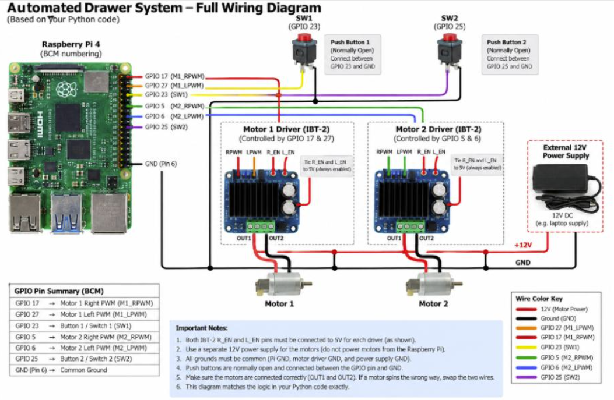
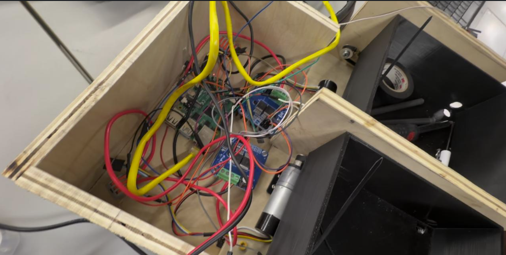
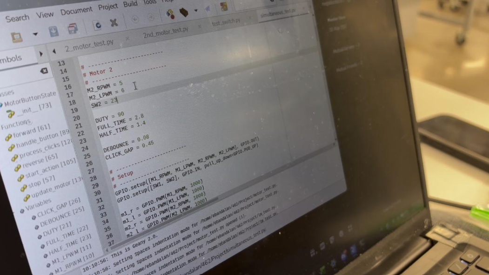

PROJECT OVERVIEW
Dual-Drawer Automation
The project was designed to automatically move two physical drawers between closed, half-open, and fully-open positions.
A Raspberry Pi 4 controls the two drawer motors through IBT-2 motor drivers while Python software manages direction, timing, homing, and independent motor states.
SYSTEM ARCHITECTURE
Hardware Design

Each drawer uses a DC gearmotor and GT2 belt mechanism. The Raspberry Pi provides logic-level control while the IBT-2 drivers handle the higher current required by the motors.
A common electrical ground allows the Raspberry Pi control signals and motor-driver circuitry to reference the same logic level while the motor power system remains separate from the Pi supply.
ELECTRONICS
Wiring Bay

The system integrates a Raspberry Pi, two motor drivers, motor power wiring, GPIO control wiring, and the mechanical drawer assemblies.
Wiring organization and power separation were important because the low-voltage control electronics and higher-current motor system operate together.
SOFTWARE
Python Motor Controller

The Python controller manages motor direction, movement timing, button commands, and independent drawer states.
Rather than blocking the entire program while one drawer moves, the system tracks the drawers independently so both motors can be controlled concurrently.
POSITIONING
Timed Motion Control
The system uses calibrated motor travel times to approximate 0%, 50%, and 100% drawer positions.
Limit-switch homing establishes a repeatable closed reference before timed position commands are used.
This approach provided a functional first-generation control system while also identifying the limitations of open-loop motion control.
EVOLUTION
What Came Next
The limitations of time-based positioning motivated the later Arduino closed-loop controller project, where quadrature encoders were added to measure actual motor movement.
That progression allowed the original mechanical platform to become the foundation for a more precise feedback-control project.
SKILLS DEMONSTRATED